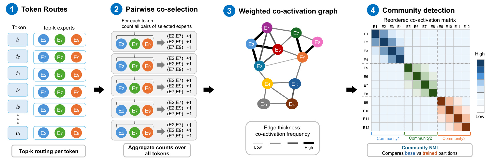
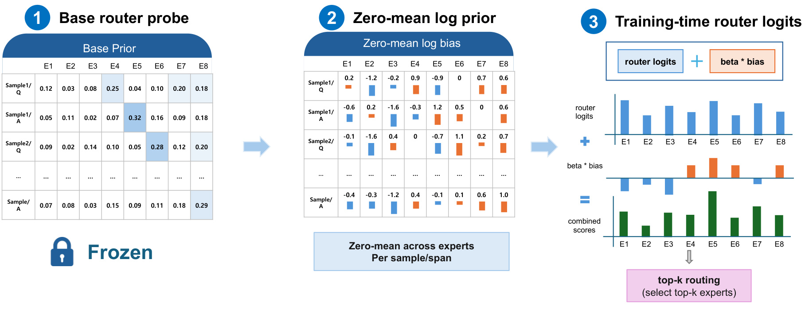
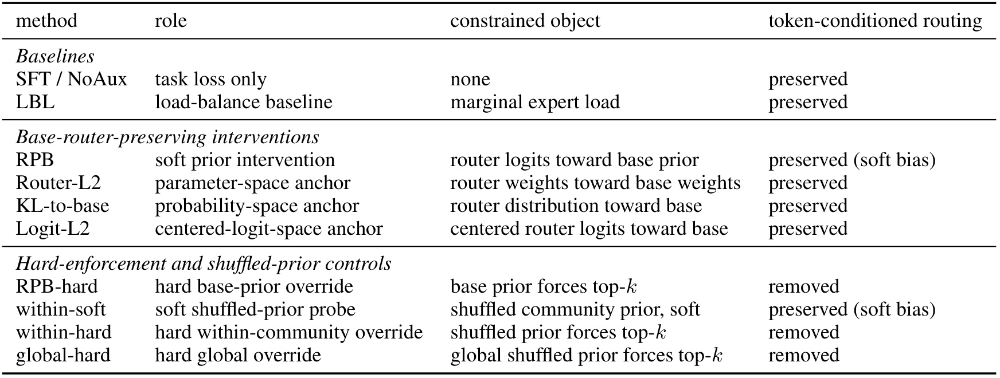
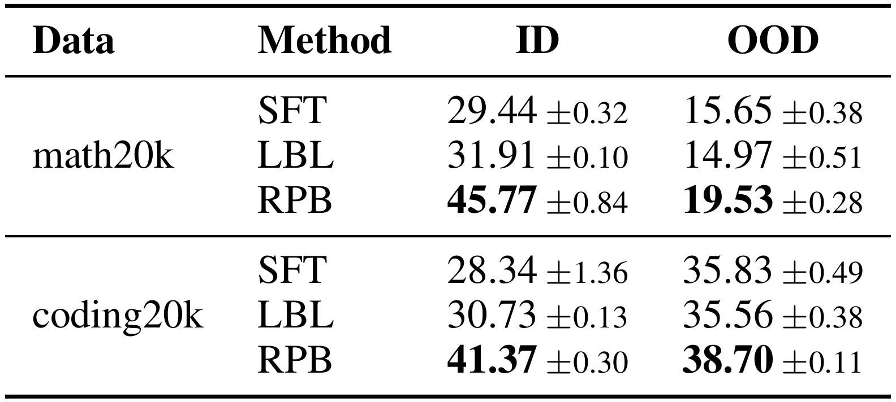
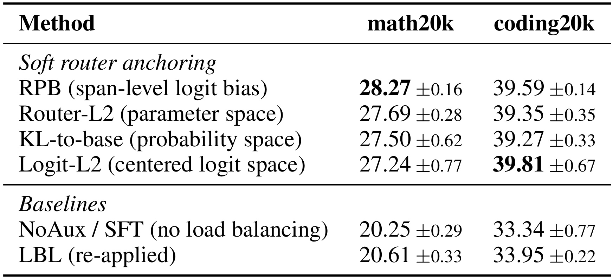
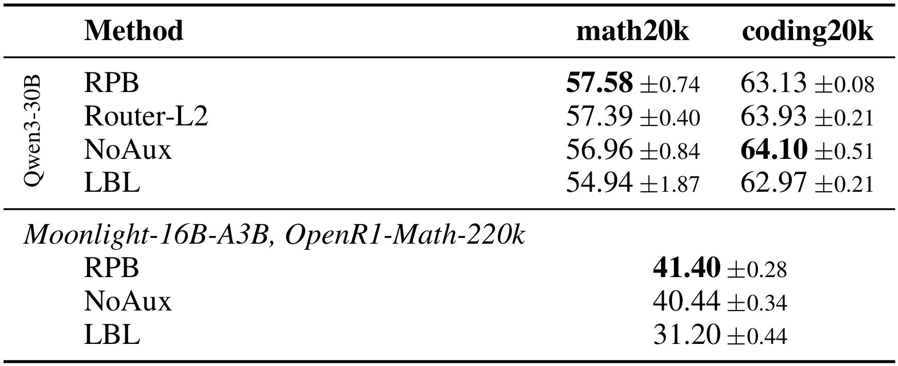
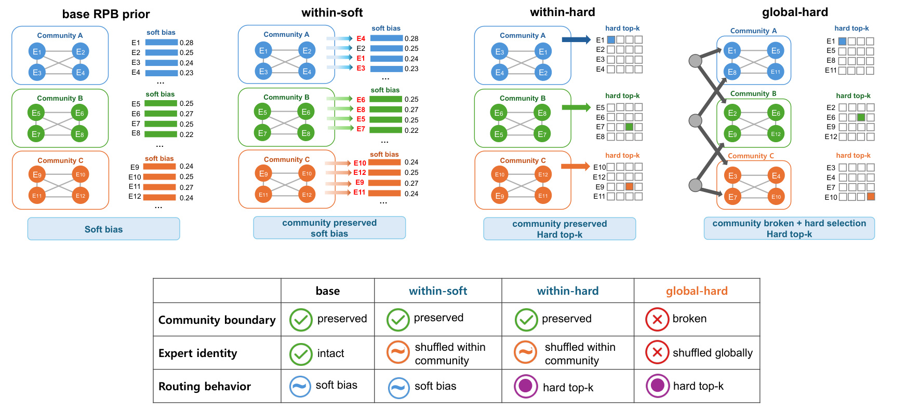
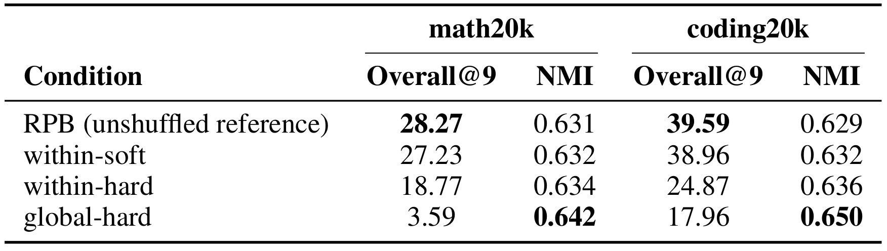
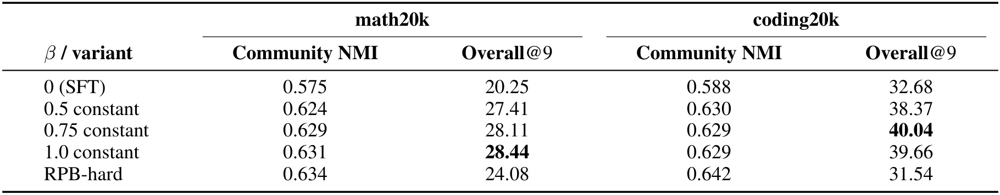
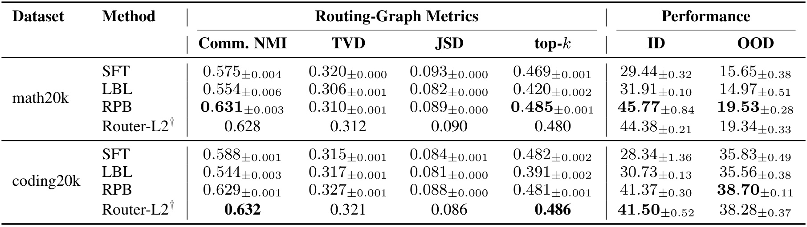

NAVER RPB：MoE 后训练为什么应柔性保留基础路由
《Router Prior Bias: Preserving Base Routing Structure in MoE Post-Training》由 Jaedeok Lee、Keonwoo Kim、Dongyoon Han、Sangdoo Yun、Yera Choi、Haanju Yoo 撰写。一作主机构为 NAVER Applied AI Group，同时隶属首尔大学医院 Healthcare AI Research Institute，合作团队包括 NAVER AI Lab。论文于 2026 年 9 月 8 日公开，研究混合专家模型后训练中的路由稳定性，提出训练期路由先验偏置 RPB，并用多种软锚和干预对照检验收益来源。论文入口为 arXiv v1；截至 2026 年 9 月 10 日核验，作者给出的 代码仓库返回 404，论文也使用将来时描述发布计划，因此当前不能标记为已开源可复现。
进入后训练时，路由器已经通过预训练形成非均匀的专家分工与共同激活模式；重新施加均匀负载目标可能冲淡这些结构，而完全冻结路由又限制了对新语料的适应。需要分开回答：应该保留基础路由的什么性质，以及应该以多强的约束保留它。
1. 背景和问题
1.1 预训练的均衡目标为何不能直接继承
混合专家模型把每个 token 送到少量专家计算，让模型拥有较大的总参数量而控制每个 token 的计算成本。在从头预训练的早期，如果路由器总选择同几个专家，剩余专家就得不到足够训练，硬件资源也会空置。因此负载均衡损失有清晰动机：给专家利用率施加趋向均匀的压力，避免模型容量在训练开始阶段就被不稳定的路由分配浪费。论文讨论的 LBL 正是这种辅助损失在后训练阶段的重新启用，而不是对整个 MoE 预训练机制的否定。
问题出在后训练的初始条件已经变化。基础模型的专家不再是对任务一无所知的随机模块；路由器在海量数据中形成了输入相关的偏好，同一批专家也可能反复一起参与某类 token 的处理。面对窄域数学或代码语料，要求每个专家重新接近相同负载，可能把原本适配这些输入的计算路径改写。单看使用次数仍可能显得健康，但一次计算中哪些专家组合在一起，哪些 token 被分配给哪些专家，已发生另一层变化。因此负载没有塌陷与知识得到保留不是等价命题。
可以用两个路由器的假想对比理解这种信息差：它们在整批数据上给每个专家分配相同次数，一个总让熟悉数学的专家共同处理符号表达，另一个把相同次数平均打散到完全不同的 token。边际利用率不能区分这两种情况。这个例子只是指标直觉，并非论文额外实验，但它说明为什么作者把“整体每个专家忙不忙”和“原来的输入到专家映射是否还在”分成不同层次。后训练稳定性如果只监控均衡曲线，就可能遗漏决定最终能力的变化。
1.2 不约束与完全冻结之间的空白
现有实践中常见的另一种处理是直接关闭均衡损失，让监督任务损失驱动路由器更新；也有工具链冻结路由层。这两种方法分别偏向适应能力和结构稳定性，但它们无法回答结构与约束强度各自起多大作用。不加约束时，专家和路由器同时面对窄域梯度，基础路径可能漂移；冻结路由参数时，模型仍可能因为上游表示更新改变实际输入路由，但路由矩阵本身失去了主动适应的自由。冻结不能简单等同于逐 token 完全复制基础模型，更不能直接等同于本文的跨度级硬选专家。
作者希望用一个连续可调的训练干预拆开问题。RPB 把冻结基础模型的选择偏好加到当前可训练路由器的分数上，既让原有偏好继续影响训练，又保留当前 token 自身分数改变排序的机会。随着偏置系数调整，任务梯度与继承偏好之间的相对作用发生变化。这使“保留路由”不再只是一个开关，而成为可以通过验证集寻找工作区间的约束。论文真正有价值的部分，也因此不是单一偏置公式，而是围绕这一连续约束所安排的替代目标和反例。
具体地，文章问了三个不同的问题。首先，软锚是否比重新施加 LBL 更适合后训练？其次，软锚是否一定比完全无锚更好？最后，软锚训练后出现的社区保留，是收益原因还是伴随结果？这三个问题的答案强度不同。对 LBL 的优势在模型和语料变化后仍有支持；对无锚基线的优势明显依赖模型；社区指标与成绩在软约束家族内相关，却能在硬控制下反向变化。阅读时如果把三者压缩成“保留社区就提升性能”，会抹去论文最重要的证据边界。
1.3 专家社区是统计对象，不是已命名的功能模块
这里的社区来自共激活图：若两个专家经常被同一个 token 的 top-k 同时选中，它们之间就有较强的边；图算法据此把专家划成组。这与事先给专家贴上“数学专家”“代码专家”的人工标签不同，也不意味着每个组内部一定语义一致、联系稠密。作者没有逐社区做语义构成分析，所以不能把 Louvain 返回的分区直接当成天然、固定、可解释的知识模块。社区保留只表示两个模型在同一探测语料上得到的分区相似，并没有直接测量知识存储位置。
这一点决定了全文的因果阅读顺序。先用下游评测判断训练方法有没有帮助，再看哪些路由指标追踪该差异，然后通过打乱先验和硬化选择破坏可能的解释。若社区相似度提高而准确率下降，就说明社区相似度不是一个可以脱离训练范围独立最大化的目标。即使某个统计量在常规训练配置下具有预测价值，把它拿来做极端干预仍可能把系统带出原来的有效区域。这是本文对路由诊断的贡献，也适用于后训练中常见的保留率、距离、熵等代理指标。
实验选取数学和代码两个领域，使新领域适应与其他领域保持能够相互对照，但后训练数据只保留最终问答，不包含显式长推理通道。领域外评测也不代表任意真实业务流量，它只是选定基准中不属于当前训练领域的集合。基础模型、数据规模、生成模板都参与塑造结论，不能把“域外更高”解释成所有原有能力都无损保留。对于需要把大模型适配到内容理解、代码工具或特定推荐任务的工程团队，这篇论文更适合作为检查路由训练策略的研究起点，而不是可以跳过基线试验的配置处方。
另外，样本条件先验本身也包含折中：它保留某个问答跨度的平均偏好，却没有逐 token 存储基础路由。这样节省存储并平滑局部噪声，但也压缩了跨度内部不同 token 的差异。软偏置仍让当前路由器补回这些差异，硬覆盖则直接丢掉了这种自由。因此后面的硬约束失败同时提醒读者，约束强度的比较是在这个跨度聚合设计下进行的；它支持保留逐 token 调整空间的重要性，却没有穷尽所有可能的硬路由方案。
2. 方法
2.1 共激活图与三层路由保留度
方法先规定测量对象，再定义干预。边际层面比较基础与训练后专家分布，用总变差距离 TVD 和 Jensen–Shannon 散度 JSD 表示整体使用质量发生多大偏移；token 层面计算基础路由与当前路由 top-k 集合的交集比例；社区层面比较整个共激活图的分区。三类指标都在相同保留探测语料上测量，而且训练期 RPB 偏置已移除。这个去偏置协议非常关键：否则高保留率可能只是额外先验在推理时继续强迫选择，无法证明路由器经过训练学到了什么。

图 1 从左到右展示四个阶段。左侧每一行是一个 token 的 top-k 专家集合，示意中选择三个专家；下一栏把一个集合展开成三个无序专家对，逐对增加共选次数。中间的网络把专家作为节点，连线粗细编码共激活频率；右边把得到的邻接矩阵按社区重新排列，使同组专家形成块状区域，再将基础模型与训练后模型的社区分区作比较。图中颜色、节点编号和箭头说明的是统计流程，不是某个真实模型的最终社区可视化，因此不能从这张示意图读出模型恰有三个语义社区，也不能将示意的 top-3 当成 Moonlight 的 top-6。
这套构图方式特意排除自环，因为一个专家被调用多少次已属于边际利用率，而作者希望度量两个专家是否共同处理输入。对每层单独计数避免把不同层的专家编号混在一起；对基础与后训练模型使用同一批 token 避免语料差异伪装成结构变化。最终得到的分区仍依赖边阈值和社区算法，因而图 1 只是定义了一个可复验测量流程，并没有把统计社区提升为训练目标。后文对阈值、检测器和边际空模型的检查，正是为了约束这个流程能支持多强的解释。
符号解释：$w_{ij}^{(\ell)}$ 是第 $\ell$ 层专家 $i,j$ 的共激活边权，$N$ 是探测 token 数，$x_t$ 表示第 $t$ 个输入 token，指示函数在两专家同时入选时取一。原文公式 1 用每个领域约五千 token 的保留探测池估计频率，自环排除，得到对称、非负的图。默认保留最重的百分之十边，再用 Louvain 最大化模块度；边权不按行归一化，以免改变社区划分对应的图几何。
符号解释：$L$ 是参与统计的 MoE 层数，$C_\ell$ 表示该层专家的社区标签分区，$I$ 是互信息，$H$ 是熵。公式依据附录 F.10，将每层对称归一化互信息取无权平均；它测的是分区一致性而不是预测正确率。作者还报告模块度 $Q$ 及其相对基础模型的变化，防止在本来就缺乏聚类结构的图上过度解读 NMI。
2.2 RPB：冻结 Q/A 先验与训练期软偏置
RPB 为每个训练样本、问答跨度、MoE 层和专家预先保存一份基础路由偏好。Q 对应指令和问题，A 对应回复和答案；二者分开不是因为训练时引入额外标签任务，而是基础模型对输入内容与输出格式可能具有不同的专家使用模式。附录表 11 的冻结探测支持这种拆分：Moonlight 数学与代码领域中心的余弦相似度在 Q 上为 0.438，在 A 上为 0.788；Qwen 对应为 0.409 与 0.561。较低余弦意味着领域区分更强，说明把两段平均起来会丢掉部分输入相关差异，但这些结果不是 Q/A 拆分相对所有其他划分都最优的消融证明。
符号解释：$x$ 是样本标识，$s\in\{Q,A\}$ 是跨度，$\ell$ 是层，$e$ 是专家；$p_{\mathrm{base}}$ 为基础路由分数经 softmax 后的概率，$\pi$ 是跨度内平均先验，对应原文公式 2。这里基础概率提取的 softmax 与 Moonlight 自身执行路由时的 sigmoid 打分规则应区分；论文的先验构造明确使用 softmaxed router probabilities，具体实现应待代码核对。
符号解释：$E$ 为该层路由专家数，$\epsilon=0.05$、$C=5.0$ 是默认截断系数，$c$ 是截断后的先验，$b$ 为沿专家轴中心化的对数偏置，对应原文公式 3 及其上下文。截断避免极小概率产生无限负分，也限制少数专家的极端偏好。附录实现还在截断后归一化；因为随后减去对数均值，归一化引入的公共常数会抵消，因此不改变最终中心化偏置。
符号解释：$z_{t,\ell}$ 是当前可训练路由器的专家分数向量，$z'$ 为参与训练期 top-k 选择的修改后分数，$\beta$ 控制偏置强度。原文公式 4 将同一跨度的偏置广播到各 token，但每个 token 的原始 $z$ 仍可不同，故没有规定整个跨度都选同一组专家。$\beta=0$ 恢复无先验的监督微调；主实验通常取一，评测时整项偏置移除。

图 2 左侧将不同样本的 Q 和 A 分开存放，每一行对应一组专家概率；冻结锁标记意味着这些先验不随当前模型梯度更新。中间把概率转为正负相间的零均值偏置，较基础平均偏好更高的专家得到正向推动，更低的专家被抑制。右侧蓝色原始分数与橙色偏置相加得到绿色选择分数，然后才执行 top-k。读图时应注意，偏置不是对最终答案概率的改写，也不是新增一个专家网络；它改变的是训练过程中哪些已有专家参与 token 计算，从而间接改变任务损失作用于哪些计算路径。
这个链路同时解释软约束与跨度平滑的关系：先验把一个跨度的历史偏好浓缩为一个向量，当前 token 的分数负责保留局部差异。若原始分数足够强，某 token 仍可以选择基础平均先验不占优的专家，因此新领域信息能够调整继承路径。偏置中心化使其表达相对专家偏好，而不是把所有分数一起上移；截断控制扰动范围，避免先验尾部数值支配选择。推理时去掉偏置后，剩下的是训练后的模型本身，因而部署不需要保存逐训练样本的先验或识别新请求属于哪个训练样本。
附录 F.7 给出 Moonlight 先验张量形状为二万乘二乘二十六乘六十四，分别对应样本、跨度、MoE 层和专家。正文模型描述使用二十七层，而先验实现列出二十六个路由层，不能直接把两处层数替换；复现时应根据模型实际 MoE 层映射核验这一差别。先验需基础模型对训练集额外前向一遍，训练加载也要维持稳定样本 ID 与 Q/A 边界。论文没有给出这一预计算的墙钟时间或端到端吞吐，因此不能因为推理无额外 hook 就宣称训练成本为零。
2.3 Router-L2 与输出空间锚：检验是否必须使用 RPB
如果只比较 RPB 与 LBL，收益可能来自任何伴随变化：先验保存了专家身份，logit 注入改变了选择，或模型只是得到了某种正则。作者因此安排三个替代锚，将约束对象移动到参数、分布及中心化分数空间，同时让路由器保持可训练。它们不是 RPB 的三个串行组件，而是互斥的训练对照；一轮实验只使用相应机制，并与相同主干、优化器和数据条件下的基线比较。
符号解释：$W_\ell$ 是当前路由权重矩阵，$W_\ell^{\mathrm{base}}$ 是冻结初值，$\lambda$ 为参数锚强度；原文公式 5 只惩罚路由参数偏移，专家、注意力和其他可训练模块继续更新。这个目标不需要样本条件先验或 Q/A 标签，所以是检验“RPB 特定先验是否不可缺少”的直接对照。保持参数相近并不严格保证输出相近，因为输入隐状态也会训练变化，因而它与行为蒸馏仍是不同约束。
符号解释：$T$ 是具有已定义 Q/A 先验的 token 集，$p_{\theta,t,\ell}$ 为当前路由概率，$D_{\mathrm{KL}}$ 按基础先验到当前分布的方向计算。该式是原文 3.3 节未编号目标，在每层以跨度先验约束当前 token 输出分布；先验相同不代表逐词目标完全来自基础逐词路由，因为目标仍是跨度聚合值。它通过额外损失传递梯度，而不是直接进入 top-k 选择分数。
符号解释：$\delta$ 是当前中心化分数与基础对数先验的差，$\operatorname{center}$ 表示减去专家轴均值。原文 3.3 节的另一未编号目标排除了所有专家共同平移的无意义方向，直接惩罚相对分数差异。与概率 KL 相比，平方距离对偏差的加权方式不同；文章没有给出二者在所有语料上应谁更优的理论判据，而是用结果说明几种软锚可达到接近水平。
3. 实验结果

表 1 将两类常被混为一谈的变化展开。前两行是任务损失单独训练与重新施加均衡损失，它们都保留逐 token 选择，但没有明确向基础路由靠近的目标；中间四行是软锚家族，分别在选择分数、路由权重、输出概率和中心化分数上施加基础模型相关约束。最后四行服务于因果控制，其中 RPB-hard 和两种 hard shuffle 都移除逐 token 专家身份选择，within-soft 则保留它。右侧这一列比简单区分“有没有正则”更有解释力，因为它明确描述模型在新数据上还能改变什么。
RPB-hard 使用同一份截断对数先验完全替换用于选 top-k 的分数，每个 Q/A 跨度的 token 被迫经过该跨度聚合先验指定的专家集合，但门权重仍来自未修改的路由器。这个控制只在训练期生效，评测仍移除强制覆盖。因此它不是冻结全部模型，也不是把所有 token 的贡献权重固定为相同值；被拿走的是依据当前 token 选择专家身份的自由。表中的组织保证后文可以先在固定先验内容下比较软硬，再在固定硬度下比较社区内与全局打乱，避免把两种干预的结果混作一个原因。
从实现选择看，Router-L2 所需元数据最少，RPB 最便于直接调节训练期选择偏好，两个输出锚则便于与蒸馏目标整合。但正文没有严格测量它们的吞吐、通信或显存差异，不能凭公式短长排序实际成本。公式所支持的工程判断是需要保存何种目标、在哪个张量上施加约束，以及训练和推理如何分离；最终成本仍要在具体分布式 MoE 框架中验证。
表中这些条件还固定了专家池本身，没有通过增删专家扩大容量来获得分数差异。因此后续比较的解释应集中于更新和分配规则，不能说 RPB 额外引入了更多可计算参数。
3.1 评测口径与 Moonlight 主结果
主实验采用从 GLM-5.1-Reasoning-1M-Cleaned 构建的 math20k 和 coding20k，各二万条。数学来自主题子集，代码来自主集合中带围栏代码块的记录，再按确定性长度、领域信号和质量惩罚评分筛选，不是随机抽取。数据只保留最终回复，去掉显式推理通道。所有 Moonlight 配置训练五轮，全局 batch 为 128、序列长 8192、不做 packing，使用相同 Adam 优化器及从 $10^{-5}$ 降到 $10^{-6}$ 的余弦学习率；附录写明共 782 个优化步。LBL 主系数为千分之一，另检查万分之一；RPB 关闭均衡目标与原路由偏置更新规则，所以改变的不只是额外增加一个偏置，还包括避免原有平衡信号继续抵消它。
主文九项聚合包含三项数学、三项代码，以及 GPQA-Diamond、MMLU-Pro、LiveBench Reasoning。对数学训练，三项数学平均为 ID，其余六项平均为 OOD；对代码训练反过来。Overall@9 是九个任务等权平均，不能简单平均 ID 与 OOD，否则两个领域组会被错误赋予相同权重。附录表 16 的 Avg 和表 12 的 DeepSeek 聚合覆盖十二项，另加的 MMLU、MMLU-STEM 与 GPQA 具有知识轴重叠，因此与九项分数口径不可比。LiveBench 使用 2026 年五月取得的固定快照，分数也不能直接与其他快照的在线榜单比较。
每个主实验配置有三个独立训练种子，每个训练所得检查点以五个采样种子生成并平均，最后报告三个训练种子平均与标准差。这是“三次训练，每次五次生成评测”，并不是十五次独立训练，也不是从五个答案中挑最优的 pass@5。生成温度为 0.6、top-p 为 0.95、最大生成 8192 token；答案抽取与模板固定。训练使用 128 张 H200，评测另用每 worker 八张 GPU，这说明论文的全参后训练证据来自较大集群，尚不能直接推断单机适配的工程成本。

表 2 的六行揭示 RPB 的主要收益同时覆盖适应和保持。math20k 上，RPB 域内为 45.77，LBL 为 31.91，SFT 为 29.44，分别相差 13.86 和 16.33 个百分点；域外为 19.53，也高于 LBL 的 14.97 与 SFT 的 15.65。coding20k 上，RPB 域内为 41.37，相对 LBL 的 30.73 高 10.64 点，相对 SFT 的 28.34 高 13.03 点；域外为 38.70，分别比两基线高 3.14 与 2.87 点。这些量差是相同九项拆分与相同三种子协议下的比较，可以作为本表中可信的效果规模。
不过，“域外保持更好”应理解为相对两个后训练基线，而非所有域外任务都回到基础模型水平。附录表 16 中，数学后训练后的若干知识问答任务仍明显低于未经训练的基础模型；聚合提升不能抹平这些回退。逐任务分解也不是 RPB 全胜：作者统计其在两组训练数据乘十二项基准的二十四个格子中有二十一个均值最高；三个例外都来自 coding20k，SFT 在 MMLU 和 LiveBench Reasoning 更高，LBL 在 GPQA-Diamond 名义上高 0.81 点，且位于种子波动范围内。因此表 2 支持更好的整体权衡，但没有证明不存在遗忘或每项基准必然改善。
主表还呈现一个容易忽视的细节：LBL 相对 SFT 的域内成绩在两个训练语料上都略有提高，但域外略低。因此将 LBL 说成任何方面都比无锚更差也不准确；它在本文更像是未能处理好适应与保留的权衡。RPB 则同时抬高两类均分，收益方向与两个基线之间的局部交换不同。读者可以用三项域内分数加六项域外分数再除以九，从表中复算 RPB 的数学综合分约为二十八点二七、代码综合分约为三十九点五九；这一核算连接表二与表三，也确认域内外不能按各一半合并。表内误差条来自训练种子变化，没有直接给出任务样本自助采样置信区间，故不能把标准差当成严格显著性检验结论。
3.2 四种软锚接近，不能将收益全归给样本先验

表 3 将四种软锚放在相同九项综合分口径下。数学训练中，RPB 为 28.27，Router-L2 为 27.69，概率 KL 为 27.50，中心化 Logit-L2 为 27.24；它们大致处于一点范围内，而 NoAux 为 20.25、LBL 为 20.61，整个软锚家族与两个基线的差异更大。代码训练中四种锚分别为 39.59、39.35、39.27、39.81，排序发生反转，Logit-L2 名义上超过 RPB；基线 NoAux 和 LBL 为 33.34 与 33.95。这里数学列和代码列都是 Overall@9，不能把 28.27 与前一表的数学 ID 45.77 当成结果矛盾。
最直接的反证来自 Router-L2：它没有样本条件先验，没有 Q/A 标签，也没有在 top-k 前加向量，却能达到接近 RPB 的分数。这削弱了“某个精细先验内容不可缺少”的解释。输出空间的两个对照又说明，把靠近基础路由的要求写进概率或相对分数损失，也能进入相近工作区域。不过，“没有一致排序”不等于统计证明四种方法严格等价，三个训练种子的分辨率也不足以排除小差异。更稳妥的结论是当前数据支持软锚这一共同属性，而没有支持某一种锚在两类语料上都占优。
附录表 7 的 Router-L2 强度扫描也应保守阅读：从一百、一千到一万，数学分数为 27.44、27.51、27.69；代码为 40.35、39.64、39.35。前两档只有单种子，主文选择一万是因为它有三个训练种子，并非因为它在所有域都最优。附录表 8 的 z-loss 则提供另一方向的反例：这种约束分数尺度但不参考基础模型的正则，在 Moonlight 数学和代码的十二项均分为 16.33 与 30.05，低于 RPB，也低于无锚微调。它来自独立运行和不同聚合口径，只能帮助说明泛化的路由正则不自动等于基础锚，不能拿它与九项主表直接计算收益百分比。
四种锚在数学列的跨度为一点零三，在代码列为零点五四，虽然较小，也提示实际任务对约束空间可能存在偏好。当前文章提供的是竞争性基线集合，后续应依据同一保留验证集选择，而不是只追随某一列粗体。
3.3 换模型后，对无锚的优势不再普遍成立

表 4 上半部分改变模型家族，用 Qwen3-30B-A3B-Base 测试更宽的 top-8/128 专家结构。数学训练后，RPB 的 Overall@9 为 57.58，Router-L2 为 57.39，NoAux 为 56.96，LBL 为 54.94。RPB 相对 LBL 高 2.64 点，方向与 Moonlight 相同；但相对 NoAux 仅高 0.62 点，处于当前训练种子波动量级，无法主张稳定胜出。代码训练更明确：NoAux 为 64.10，高于 Router-L2 的 63.93 和 RPB 的 63.13，LBL 为 62.97。RPB 与 LBL 只有 0.16 点，论文明确认为在现有种子预算下不可分辨，不能把“所有区块 LBL 名义最低”改写成“所有区块差异显著”。
下半部分保留 Moonlight，但把语料换成独立来源 OpenR1-Math-220k，经相同预处理得到约九万四千样本。RPB 为 41.40，NoAux 为 40.44，LBL 为 31.20。RPB 对 LBL 高 10.20 点，明显大于表内训练种子波动；对 NoAux 高 0.96 点，作者认为超出合并标准差，但幅度已经远小于 math20k 的大差距。因此独立语料支持对重新均衡的警惕，也支持这一数据上软锚有小幅收益，却不能替代对新模型、新指令分布的基线验证。主文随后概括优势未能普遍保持，结合表格应理解为不具有跨模型、跨语料一致的大幅提升，而不是抹掉 OpenR1 的正向差异。
从部署选择看，这张表可能比摘要数字更重要：如果现有模型已经在无辅助损失下适应良好，增加软锚可能收益很小，甚至限制所需的领域调整。现有证据还不能依据专家数量、共享专家设计或某个单一锐度值预测反转。论文把 Qwen 用于跨家族性能检验，没有提供与 Moonlight 同样完整的社区诊断因果链；其冻结路由余弦探测也与其他模型使用的 L1 锐度指标不同，不能直接放进同一条“越尖锐越适合 RPB”的定量排序。
还应区分两个泛化轴的实验安排：Qwen 部分同时更换模型家族和专家池宽度；OpenR1 部分保持模型而改变语料来源与样本规模。因此前者不能孤立证明专家数增加造成收益消失，后者也不能把变化全归因于独立来源。它们提供稳健性检查，而不是各因素完全正交的归因。
3.4 固定先验内容再改变软硬：社区指标的反例

图 3 左侧是未打乱基础先验，接下来三列分别改变专家身份与施加强度。within-soft 仅在同一基础社区内交换专家标签，所以概率仍落在原社区范围，但某个位置对应的具体专家已变化；它继续作为软偏置加入当前分数。within-hard 使用相同的社区内置换先验，却改成强制跨度 top-k，消除 token 条件选择。global-hard 在全体专家中置换身份，再强制跨度选择，同时破坏原来的社区归属与软选择自由。图下方三行对照把社区边界、专家身份、路由行为逐一列出，避免把“保留组别”与“固定专家”混为一件事。
这个设计最有说服力的比较是 within-soft 对 within-hard，因为先验内容保持相同，主要变化就是软性偏置变成硬选择。within-hard 对 global-hard 则检验硬约束下打乱范围的影响，但不能单独代表软约束下全局打乱的结果。附录说这是一个二维设计中的三个已报告控制单元，缺少 global-soft，因此不要把它描述为四个格子全部完整测量的全因子实验。它能够分离几个关键替代解释，却没有枚举所有目标内容与施加强度组合。
为了证明社区内打乱不是几乎没有改变先验，附录表 13 直接检查训练前张量。数学先验 top-k 有约百分之四十六发生改变，代码约百分之六十；有效对数偏置变化的第九十分位分别约 0.471 与 0.822，与原偏置每行标准差约 0.616、0.654 同量级。全局置换改变约百分之九十，强度更大；截断上界命中率只有约百分之一到二，说明变化没有被截断步骤悄悄抹掉。这些是干预前的先验张量统计，不是训练后路由保留率，不能用训练后 top-k 接近反过来宣称打乱没有真正发生。

表 5 的数学列从 RPB 的 28.27 到 within-soft 的 27.23，只损失 1.04 点；改成 within-hard 后降到 18.77，再全局硬打乱降到 3.59。代码列相同顺序为 39.59、38.96、24.87、17.96，软到硬的落差同样远大于仅做社区内软打乱。相对固定内容下的软版本，within-hard 数学损失 8.46 点、代码损失 14.09 点。与之相反，社区 NMI 却从 RPB 的数学 0.631、代码 0.629，升到 global-hard 的 0.642、0.650；若只追求该指标，反而会选择准确率最差的一端。
因此能够支持的因果表述是：在这些跨度级先验控制中，保留可训练、token 条件的软选择对于保持高性能有重要作用；不能据此声称社区结构本身完全无用，更不能说社区越像基础模型就越好。global-hard 的高 NMI 还带有弱聚类图上指标分辨率有限的问题，作者明确指出它未必代表真实功能保留。主表准确率是三个训练种子的均值，RPB 的社区探测有三个种子，打乱控制只有两个探测种子，故小数点后三位的微小差别不应做精细排名。附录表 18 的逐任务分解进一步显示，数学训练的 global-hard 在 HumanEval、MBPP、LiveBench Coding 仅为 0.04、0.16、0.21，能力塌陷并非只发生在一个聚合均值上。
固定硬度继续扩大打乱范围时，数学从十八点七七降至三点五九，代码从二十四点八七降至十七点九六，说明社区内交换和跨社区交换在这个模型上有不同代价。但此时的结果已经处在硬选择导致严重退化的区域，不能把额外损失直接量化成正常软训练中社区知识的价值。尤其全局控制同时改变很多专家身份，其负面结果只提供破坏性对照。结合缺失的全局软单元，稳妥表述应是：局部身份扰动在软应用时可容忍，拿走逐词调整能力后代价更大，跨组强制分配会进一步恶化这个模型。
3.5 强度扫描：更强的结构保留并不单调提高成绩

表 6 使用单个训练种子 s42，各检查点仍做五次评测平均，因此各行之间是匹配的单种子比较。数学语料从零偏置的 20.25，增加到系数 0.5 的 27.41、0.75 的 28.11、1.0 的 28.44；硬选择却退回 24.08。代码语料从 32.68 升到 38.37，在 0.75 达到 40.04，1.0 为 39.66，硬选择下降到 31.54，已经低于无偏置。与此同时，社区 NMI 很早就在约 0.5 强度附近接近饱和，之后成绩仍随强度变化；硬选择还达到更高的 0.634 和 0.642，清楚展示两条响应曲线并不同步。
这意味着有效工作区间不应靠 NMI 最大值决定。数学和代码的名义最优系数也不同，不能把主实验常用一解释为一个普适常数。硬选择并非公式中简单令系数取某个有限大值，而是专门用先验替换选择分数的另一种机制；把它称为强约束端点是实验上的概念对应，不能声称其与连续系数极限在所有路由实现里严格等价。表 6 的代码无偏置 32.68 与表 3 三种子均值 33.34 不一致是种子口径差异，不是同条件冲突；引用量差必须在本表内配对。附录表 14 又用 ID 与 OOD 等权平均展示硬度分解，因其与九任务等权分数不是同一指标，本笔记不把它的差值拼入主表排序。
从选择机制看，零点五偏置已明显改善成绩，但基础社区保留此时几乎到顶，继续把系数调到零点七五或一主要改变适应过程，而未带来同量级的结构指标变化。这个时间静态的扫描不能揭示具体哪一步梯度造成改进，也没有显示训练轨迹的先后因果，因此作者关于域外专家受到较少窄域梯度的解释仍是未直接测量的假说。验证它需要记录各专家更新范数、不同 token 的选择变化和领域回归曲线，而非从终点 NMI 曲线单独倒推出梯度隔离机制。
3.6 路由诊断能解释到哪里

表 15 把路由指标与准确率并列，给出了“为什么不能只看均衡”的直接证据。数学训练中，SFT、LBL、RPB 的 TVD 分别约 0.320、0.306、0.310，JSD 约 0.093、0.082、0.089，几个方法处在接近范围，不能凭最小边际距离识别最好效果。top-k 重叠中 LBL 较低，但在代码训练里 SFT 为 0.482，位于 RPB 的 0.481 与 Router-L2 的 0.486 之间，因此逐 token 身份重叠也不能在两个数据集上稳定分离软锚家族。社区 NMI 则在数学上呈现软锚约 0.63、SFT 约 0.575、LBL 约 0.554；代码上软锚约 0.63、SFT 约 0.588、LBL 约 0.544。
这说明社区保留在 Moonlight 的这些常规训练条件中具有诊断价值，却要与表 5 的硬控制反例一并阅读。表内 Router-L2 的性能是三种子均值，而路由图统计只有一个探测检查点，没有误差条；不能把它与 RPB 的百分之几千差别当成稳健排名。TVD 和 JSD 在表中也没有标“最好”，因为偏离基础边际少并不自动表示好，适应新数据本来就可能需要改变分布。工程监控更适合同时追踪这些量与任务评测，判断发生了哪种结构漂移，而不是把所有路由指标都改写成越低或越高越好。
附录对社区对象本身做了两类检验。边际保持空模型对每个运行、领域和层采样一百张图，保留专家边际质量但移除真实配对关系；观察图的模块度在所有单元都高于空模型，优势范围为 0.132 到 0.210，说明图中不只有边际频率造成的假象。NMI 优势较小且不按性能排序，所以它验证的是社区对象存在性，而非效果机制。阈值扫描把保留边比例从百分之五改到十和二十，绝对 NMI 明显下降，但 RPB 与 Router-L2 高于 SFT、SFT 高于 LBL 的顺序保持；换用 Leiden 与 Louvain 单格差异不超过 0.009。鲁棒性减少了任意阈值选择的疑虑，却仍不能补上社区内部功能分析。
DeepSeek-V2-Lite 是诊断适用范围的反例。基础路由距均匀分布的 L1 锐度只有 0.1399，而 Moonlight 为 0.5445；数学与代码边际分布距离分别为 0.0724 和 0.3735。其社区图更分散，几种训练条件的 NMI 都约为 0.49，失去区分力。附录表 12 在十二任务口径下仍显示 RPB 数学平均 16.12 高于硬选择 9.44，代码 22.58 高于硬选择 16.92，软硬差异仍在。表 19 的九项分解中，global-hard 反而略高于 within-hard，说明“打乱范围越大越差”的单调关系也只是 Moonlight 上的观察。门函数与 top-k 规则差异是候选解释，作者没有隔离它们做因果实验，不能归结为 sigmoid 必然优于 softmax。
4. 总结
4.1 最可靠的发现与工程迁移
本文把 MoE 后训练的稳定性从负载均衡曲线移到了“继承路由如何适应”的问题上。最可靠的证据是，同一 Moonlight 配置下几种基础模型相关软锚都明显好于重新施加 LBL，而跨度级硬选择会损害性能，即使某些保留指标继续变好。RPB 是这个原则的一种有竞争力的实例：先验冻结、训练路由可调、推理移除偏置。它既没有证明自身在所有软锚里最好，也没有证明专家社区相似度就是性能因果，更没有证明软锚在所有模型上胜过 NoAux。
对大模型领域适配，实际可迁移的做法是保留一个有竞争力的无锚基线，再比较 Router-L2、RPB 和当前框架的 LBL；用同一验证集联合观察新域成绩、旧域关键能力、专家负载、逐 token 路由变化和社区指标。对于推荐系统中的内容理解、候选重排或用户意图模型，如果它们基于预训练 MoE 做窄域微调，这组对照有直接研究价值。对于普通稠密排序模型或完全从头训练的多任务门网络，本文并没有给出验证结果，不能把“向基础路由靠近”直接等同于线上点击率或收入会提升。
更具体的工程判断是，参数锚不依赖训练样本 ID，可能适合作为首先实现的对照；RPB 则要保证离线先验与在线 batch 的样本、跨度、层索引一致。在长序列截断、chat template 改变或 packing 开关切换后，Q/A 边界可能变化，旧先验不能不经核验继续复用。推理删除偏置这一协议也应该成为检查点验收项，否则评测可能测成先验辅助推理而不是模型自身行为。上述建议来自方法依赖关系，并非论文已提供的线上系统测试。
4.2 局限与后续验证
第一，模型泛化有限。Moonlight 支撑完整的社区分析，Qwen 主要支撑性能边界，DeepSeek 提供诊断失效范围；这并不足以建立跨所有 MoE 架构的规律。尤其 Qwen 代码任务中无锚优于 RPB，意味着新项目不能只根据主表的大幅提升决定训练策略，需要重新测量模型对域偏移的敏感性。
第二，数据构造有明显选择性。两个二万条集合来自同一来源，按长度、数学符号和代码块规则筛选，且只保留最终回复。独立 OpenR1 扩展减少了同源依赖，却没有覆盖多语言混合指令、持续多域更新或真实用户噪声。长链推理轨迹可能引入按时间变化的路由状态，静态共激活图未必足够，论文也未验证此场景。
第三，因果控制仍有设计边界。硬跨度覆盖既增强约束又移除逐 token 专家选择，缺少 global-soft 以及更细粒度的逐 token 硬先验对照；社区成员未做功能语义分析。现有证据能否推广为所有硬路由形式都会失败，尚无答案。应该把“软硬差异”绑定到本文实际实现，而非所有冻结、稀疏或专家选择方法。
第四，统计与复现证据不均衡。主结果具有三个训练种子，但不少强度扫描、DeepSeek 结果和路由探测只有一两个种子，生成重复次数不能代替独立训练次数。代码目前返回 404，先验概率提取与模型实际门函数的对应关系、路由层数映射和分布式 hook 细节尚不能从仓库核验。论文披露集群配置，却没有给出预计算成本、训练吞吐或显存对照，也没有证明相同收益可在低预算适配中得到。
后续首先应等待代码公开后复现最小证据链：同一基础检查点、同一数据切分、NoAux 与 Router-L2 与 RPB 三组，并确认评测无任何先验 hook。其次，在足够独立种子下扫描强度，同时记录域内与域外曲线，检验 NMI 饱和是否早于性能拐点，避免按代理指标调参。第三，补齐 global-soft、逐 token 硬基础先验和长推理轨迹试验，把先验内容、聚合粒度与约束强度拆得更细。第四，在业务 MoE 中加入吞吐、跨专家通信和旧域回归成本，判断离线收益是否值得先验生成与维护成本。只有这些验证完成，才能把这篇论文的机制启发转化为可长期维护的后训练策略。